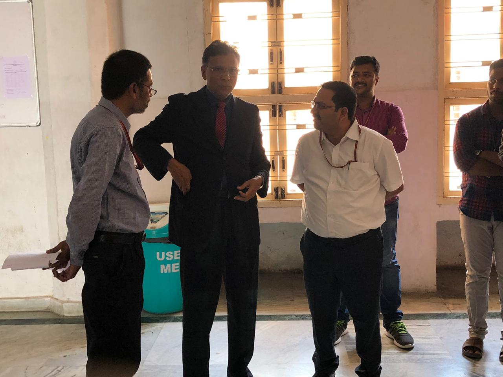
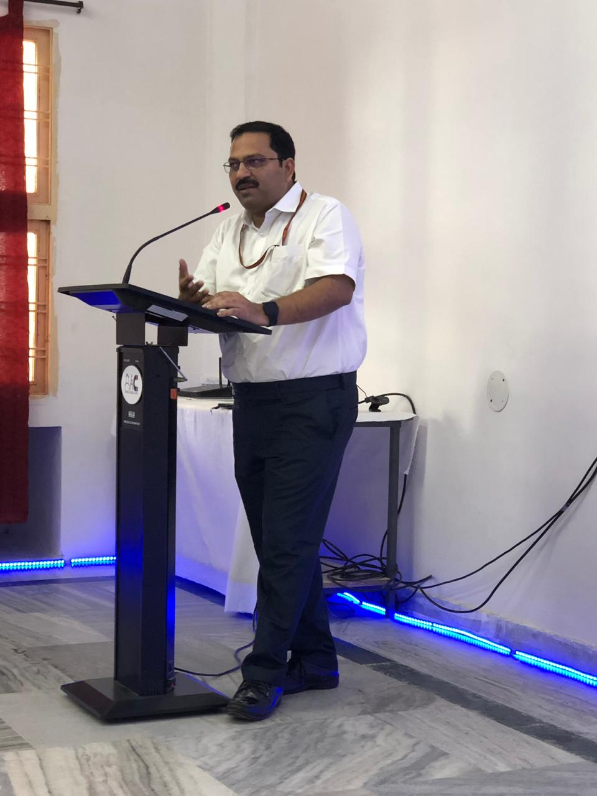
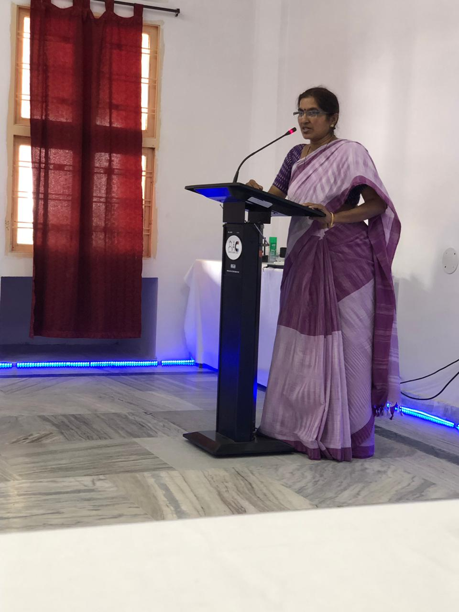
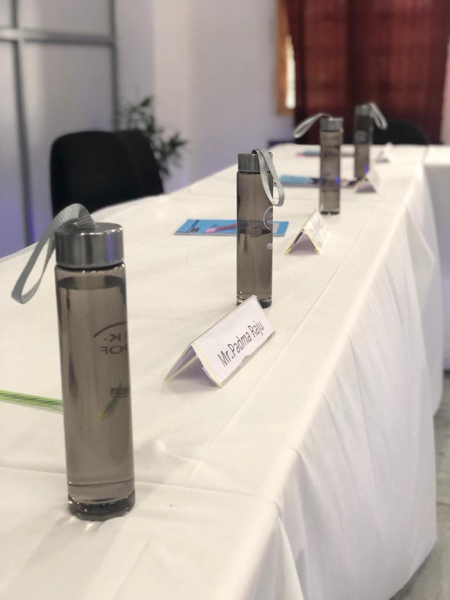
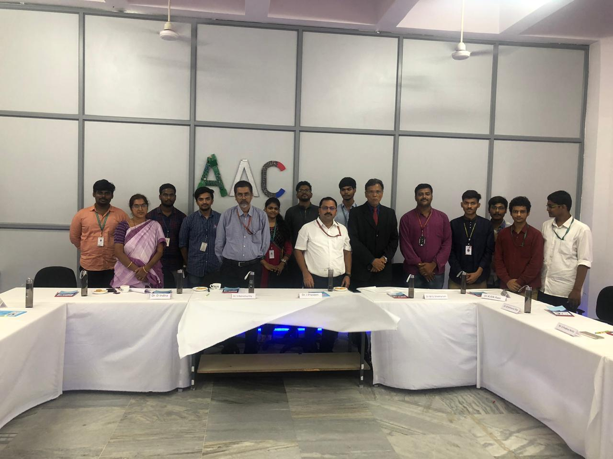
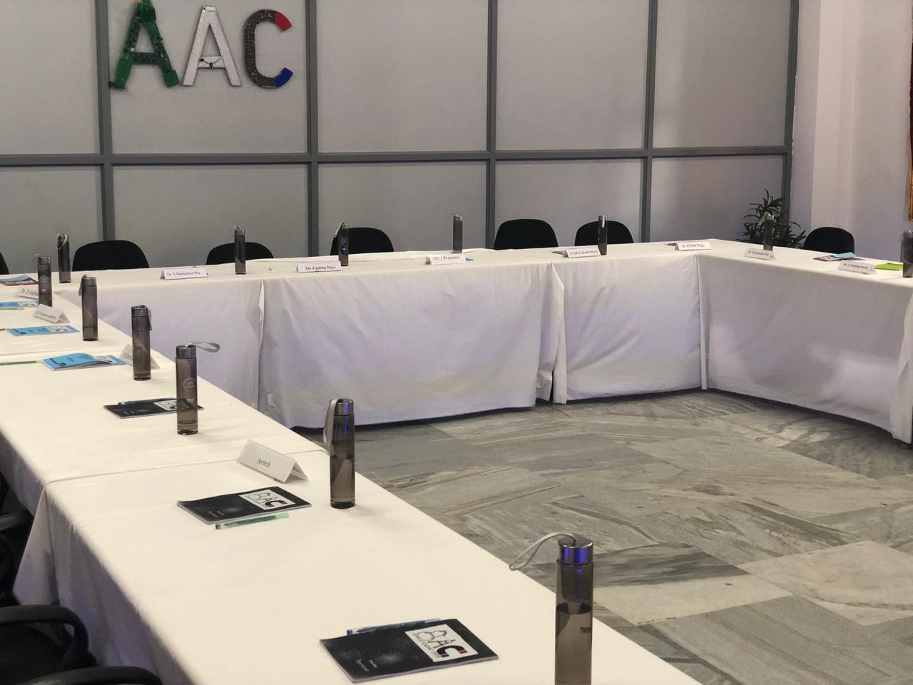

In an endeavor to inculcate and develop technical research in the young learners of today ,Advanced Academic Centre(AAC) , GRIET proudly set its steps into the noble mission of knowledge enhancement and peer learning. We keep moving forward, opening new doors and doing new things because we’re curious! And curiosity keeps leading through new paths.
AAC stands for learning through exploration, experimentation and experience. To create a novel environment to foster scientific temper, innovation and creativity amongst students , the committee has set up a Lab in room number 3614 in the Block 3 for conducting conclaves and to carry out research level projects.
The inauguration was held on 31st August 2019. Dignitaries present on this day were Chief Administrator of Gokaraju RangarajuEducation Society Dr.M.G.Sekharam , Principal of GRIET , Dr.J.Praveen , Dean of AAC , Dr.S.Ramamurthy, Head of the Department Information Technology , Dr.K.Prasanna Lakshmi , Dr.D.Indira and Mr.G.Pradeep Reddy along with the AAC student body. Dr.M.G.Sekharam cut the ribbon and inaugurated the lab.
All dignitaries on the dais expressed their views on the initiative and motivated the students to utilize the resources to their best outcomes.
Dr.S.Ramamurthy, expressed his gratitude towards the college management for the remarkable gesture of aiding the AAC students with the latest technology and urged the students to make great use of it. He further extended his speech by explaining about how the conclaves would help the students to meet the expectations of the industry.
Dr.M.G.Sekharam motivated the students to make the best use of every hands-on-experience in the lab and advised the mentors of AAC to turn the classroom environment into a Laboratory experience of learning, as well.
Dr.J.Praveen in his message urged students to dare to dream beyond the mediocre. He made the students to realize that there are some accidental inventions and some others-which are planned, focused and persistently followed in the view of better achievements through active experimentation.
Dr.D.Indira in her address said, “It’s a very proud moment for AAC to own a lab in the college premises to carry out research . Students are the resource persons of this lab where they can discover themselves, innovate, execute their new ideas and work on their creativity. I urge students to make best use of this lab and i wish all the success for their future endeavors”.

Mr.G.Pradeep Reddy congratulated the AAC committee for setting up a lab to produce well-equipped graduates that meet the varying demands of the industries. He also felt conclaves ensure to expose students to the real-world and provide practical experience while learning.
    